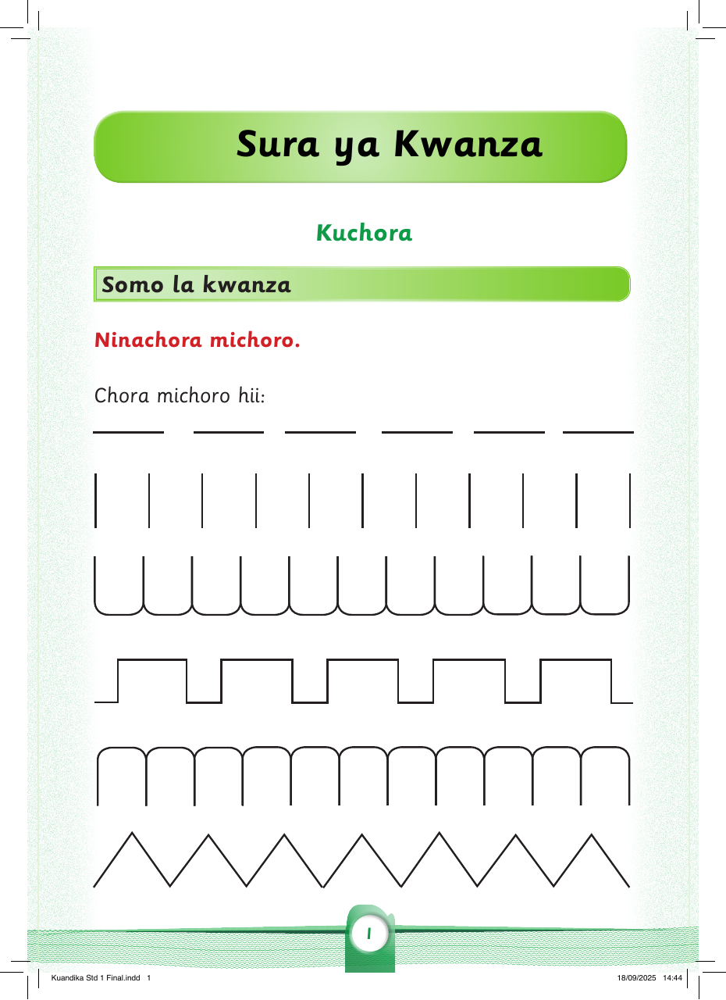

Sura ya Kwanza
Kuchora
Somo la kwanza
Ninachora michoro.
Chora michoro hii / Chora michoro hii kwa kutumia vifaa vya brelli.
| | | | | | | | | | |

Ninachora michoro.
Chora michoro hii / Chora michoro hii kwa kutumia vifaa vya brelli.
| | | | | | | | | | |